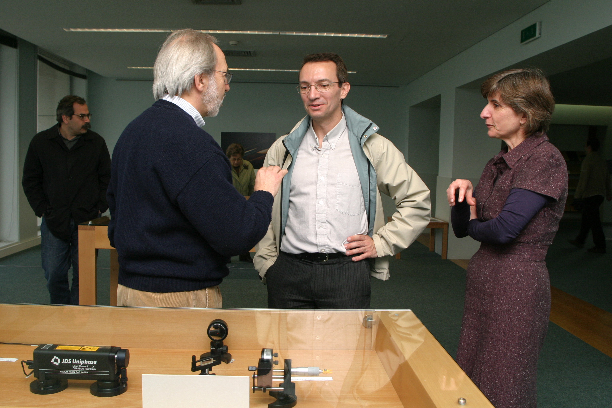

This exhibition, within the commemorations of the International Year of Physics, was shown at the Library of the Faculty of Engineering of the University of Porto, from April 21 to June 13 2005.
Light is a phenomenon that has attracted the attention of many scientists throughout history. The physical explanation of light gave rise to two main rival theories, source of very heated debates among the scientific community. Those two rival theories were only reconciled in 1905 after Einstein's explanation of the photoelectric effect, which is one of the events commemorated during 2005 — International year of Physics.
The experiments in this exhibition follow the evolution of the theories of light from Newton (XVII century) to Einstein (XX century). There is a separate Web page for each experiment (see list below) and the whole brochure can also be downloaded as a PDF file.
Exhibit and texts prepared by Jaime Villate.